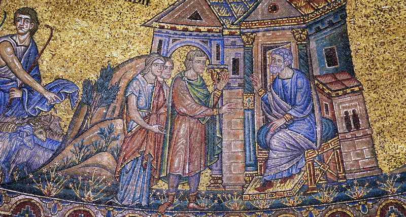

МУЗЫКА и ТОРА
Следуя древней традиции, израильский композитор Даниэль Круглов в течении года каждую неделю делал аудио-запись своей интерпретации и размышления над соответствующим недельным чтением Торы.

Как известно, еврейская традиция делит весь текст Торы на недельные чтения с таким умыслом, чтобы за год пройти весь годовой цикл чтений в синагогах и полностью закончить весь текст Торы к концу года. Так, что во всех синагогах мира в одно и тоже время читают и размышляют, истолковывают и исследуют один и тот же отрывок книг Моисеевых, постигая мудрость Всевышнего.
Даниэль Круглов – израильский композитор, исполнитель, импровизатор, - особенным образом прочитывает каждое недельное чтение. Следуя древней традиции, Даниэль, втечение года каждую неделю делал аудио запись своей интерпретации и размышления над соответствующим недельным чтением. Так, что за год такого прочтения был создан полный цикл музыкальных интерпретаций – всего пятьдесят четыре импровизации.
ДАНИЭЛЬ КРУГЛОВ: муз. размышление на н.гл. Торы (Берешит /Быт./ 37:1-40:23)
Музыка является особенным языком, с его помощью можно выразить то, что не может быть выражено другими средствами. Даниэль ищет в отрывке Писания то, что пробуждает в нем эмоциональную реакцию. Затем он формулирует свои впечатления и мысли посредством нот.
Далеко не всегда Бог говорит человеку открытым текстом. Да и сами мы можем объяснить словами далеко не все. Например, мы не можем объяснить, что такое холод, или что такое вкус. Это надо просто почувствовать. Точно также и в Писании мы можем ощутить определенные переживания, которые сложно выразить словами. Именно это - пережитое при соприкосновении с текстом Писания Даниэль передает с помощью музыки.
С ее помощью можно выразить душевные порывы, эмоциональные состояния, которые присущи Торе. Эмоции, чувства – это очень важная часть души человека. Такими нас сотворил Всевышний. И Он изначально планировал говорить к нам через наши чувства, используя Им же заложенную в нас способность воспринимать на эмоциональном уровне.
Для композитора Даниэля Круглова Тора наполнена музыкой. И поскольку музыка - абстрактное искусство, не имеющее однозначной конкретной интерпретации, - она может служить особенным инструментом познания текста, как утверждает Даниэль. Именно абстрактность музыки позволяет ему, как художнику, делиться своим откровением, не навязывая другим своего суждения. Через музыку слушатель может быть подготовлен и направлен к определенному восприятию текста Торы, к размышлению над конкретным ее отрывком. При том, в своих размышлениях такой человек будет вполне самостоятелен. Музыка, как бы способна передать ему вдохновение для размышления.
Еврейские мудрецы различают четыре уровня трактования Торы - ПАРДЕС: пшат, ремез, драш, сод. Традиция говорит также о симидесяти ликах Торы. Так что в зависимости от нашего познания, посвящения, творческого потенциала, мы можем погружаться и познавать бесконечно. Даниэль полагает – можно говорить о музыкальном восприятии текста Торы, как одном из уровней интерпретации ее текстов.
Точно также, как мы не можем объяснить некоторые вещи человеку, говорящему на англ.яз. с помощью русского, также не возможно передать некоторые вещи с помощью иного языка, кроме как с помощью музыки. То, что порой не может быть выражено с помощью слов, может быть выражено языком музыки.
Так, с помощью слов нельзя объяснить Бога. Мы можем бесконечно пытаться это сформулировать, но слова этого все же не в состоянии сделать. С помощью музыки можно создать соответствующую атмосферу, так, чтобы наше восприятие стало шире.
Одна из недельных порций Торы называется «Итро» (синод. – Иофор / Исх.18:1-20:26/ ). Итро – Мадиамский священник, который устал поклоняться мертвым идолам и искал истинной веры. Отход от веры отцов, по всей вероятности, обернулся для него проблемами со стороны его соплеменников. Я прошу Даниэля представить импровизацию на этот отрывок. Давайте попробуем поразмышлять, вслушаться в музыку этого текста.
Была ли то спонтанная реакция, либо следование определенной заданной программе, попытка раскрыть некий образ?
По утверждению музыканта в данном конкретном случае он выступил в роли художника-иллюстратора. Мы не знаем в подробностях о том, что это был за человек - Итро, как он выглядел. Но, тем не менее, что-то в Писании все же есть. То, что Даниэль попытался сделать –это передать его внутренний мир.

Мне представляются очень важными подобного рода попытки музыкального исследования священных текстов Торы. Было бы здорово увидеть также и произведения других художников (не только музыкантов), прочитывающих Писание посредством своего творчества так, как ни кто иной не способен это сделать.
Запись беседы с Даниэлем Кругловым, а также его моментальные импровизации см. здесь:
авторы: Даниэль Круглов, Эфраим Калиш /TORAART/
см. также
следующую часть "ТОРА и ЯЗЫК МУЗЫКИ"
музыкальная ипровизация "ДАР МИРОТВОРЕНИЯ". Даниэль Круглов